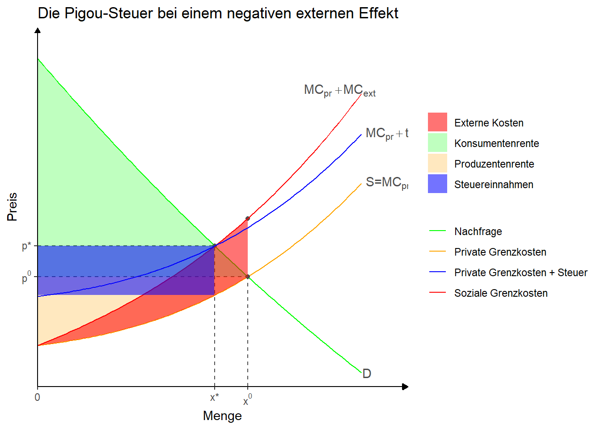

Code
# Bibliotheken laden
library(tidyverse)
library(ggtext)
# Funktionen definieren
x <- 0:5
demand <- function(x) (x - 8)^2-5*x
supply <- function(x) x^2.5 + 2.5*x + 8
#t <-10
supply_ext <- function(x) x^2.5 + 7.5*x + 8
#labels <- c("Nachfrage", "Angebot")
#Gleichgewichtsmengen
q <- uniroot(function(x) demand(x) - supply(x), range(x))$root
q_t <- uniroot(function(x) demand(x) - supply_ext(x), range(x))$root
#Gleichgewichtspreise
p <- supply(q)
p_t <- supply_ext(q_t)
p_ext <- supply_ext(q)
test <- "x^t"
# Angebotsfunktion mit Steuer
t <- supply_ext(q_t) - supply(q_t)
supply_t <- function(x) x^2.5 + 2.5*x + 8 + t
# Konsumenten- und Produzentenrente
z <- seq(0, q, 0.01)
z_t <- seq(0, q_t, 0.01)
z_wfl <- seq(0, q, 0.01)
# Chart
chart <- ggplot() +
stat_function(aes(color = "Nachfrage"), fun = demand, xlim = c(0,3.5))+
annotate(geom = "text", x=3.5, y=demand(3.5), hjust=-0.1, label="D",color = "grey30")+
stat_function(aes(color = "Private Grenzkosten"), fun = supply, xlim = c(0,3.5))+
annotate(geom = "text", x=3.5, y=supply(3.5), hjust=-0.1, label=expression("S=MC"[pr]), color = "grey30")+
annotate("point", x = q, y = p, color = "grey30")+
annotate("segment", x = q, xend = q, y = 0, yend = p,
linetype = "dashed", color = "grey30") +
annotate("segment", x = 0, xend = q, y = p, yend = p,
linetype = "dashed", color = "grey30")+
annotate("point", x = q, y = p_ext, color = "grey30")+
geom_ribbon(aes(x = z, ymin = supply(z), ymax = p,
fill = "Produzentenrente"), alpha = 0.25) +
stat_function(aes(color = "Soziale Grenzkosten"), fun = supply_ext, xlim = c(0,3.5))+
annotate(geom = "text", x=3.5, y=supply_ext(3.5)+.5, hjust=0.8, label=expression("MC"[pr]~+MC[ext]),color = "grey30")+
annotate("point", x = q_t, y = p_t, color = "grey30")+
annotate("segment", x = q_t, xend = q_t, y = 0, yend = p_t,
linetype = "dashed", color = "grey30") +
annotate("segment", x = 0, xend = q_t, y = p_t, yend = p_t,
linetype = "dashed", color = "grey30")+
# annotate("text", x=1, y=16, label="PR", color="grey30")+
#Preis abzüglich steuer
# annotate("segment", x = 0, xend = q_t, y = p_t-t, yend = p_t-t,
# linetype = "dashed", color = "grey30")+
geom_ribbon(aes(x = z, ymin = p, ymax = demand(z),
fill = "Konsumentenrente"), alpha = 0.25)+
# geom_ribbon(aes(x = z_t, ymin = p_t-t, ymax = p_t,
# fill = "Steuereinnahmen"), alpha = 0.55)+
# geom_ribbon(aes(x = z_wfl, ymin = supply(z_wfl), ymax = demand(z_wfl),
# fill = "Wohlfahrtsverlust"), alpha = 0.55)+
# annotate("text", x=1, y=28, label="KR", color="grey30")+
#Soziale Kosten
geom_ribbon(aes(x = z_wfl, ymin = supply(z_wfl), ymax = supply_ext(z_wfl),
fill = "Externe Kosten"), alpha = 0.55)+
# annotate("text", x=q+1, y=p_t, label="Wohlfahrtsverlust",color = "grey30")+
#
# Angebotsfunktion mit Pigou-Steuer
#
stat_function(aes(color = "Private Grenzkosten + Steuer"), fun = supply_t, xlim = c(0,3.5))+
annotate(geom = "text", x=3.5, y=supply_t(3.5), hjust=-0.1, label=expression(MC[pr]+t),color = "grey30")+
#
#Steuereinnahmen
geom_ribbon(aes(x = z_t, ymin = p_t-t, ymax = p_t,
fill = "Steuereinnahmen"), alpha = 0.55)+
#
scale_color_manual(values=c("green", "orange", "blue", "red"))+
scale_fill_manual(values=c("red", "green", "orange", "blue"))+
scale_x_continuous(expand = c(0, 0),
breaks = c(0,q_t,q), labels = expression(0, "x*","x"^0),
limits = c(0, 4)) +
scale_y_continuous(expand = c(0, 0),
breaks = c(p, p_t), labels = expression("p"^0, "p*"),
limits = c(0,70)) +
theme_classic() +
theme(panel.grid = element_blank(),
# legend.position = "none", #Damit Legende unterdrückt.
#axis.breaks.x=element_markdown()
) +
theme(axis.line = element_line(arrow = arrow(type='closed', length = unit(5,'pt'))))+
labs(x = "Menge", y = "Preis",
color = NULL,
fill = NULL,
title="Die Pigou-Steuer bei einem negativen externen Effekt")
chart